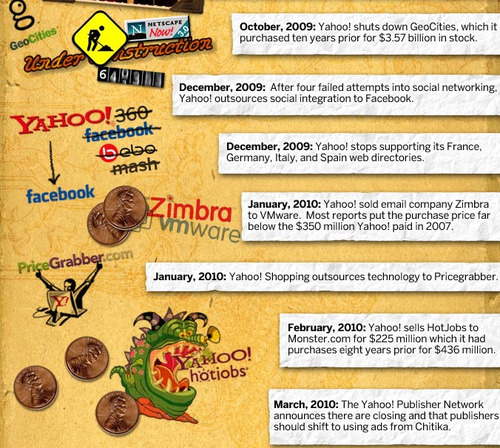

Fri, 12 Nov 2010 05:09:00 · infographic · yahoo · tech
Infographic: The Decline Of Yahoo

See here for a complete Infographic on the brutal decline of Yahoo. Also check out the must-read essay from Paul Graham on ’What happened to Yahoo’.